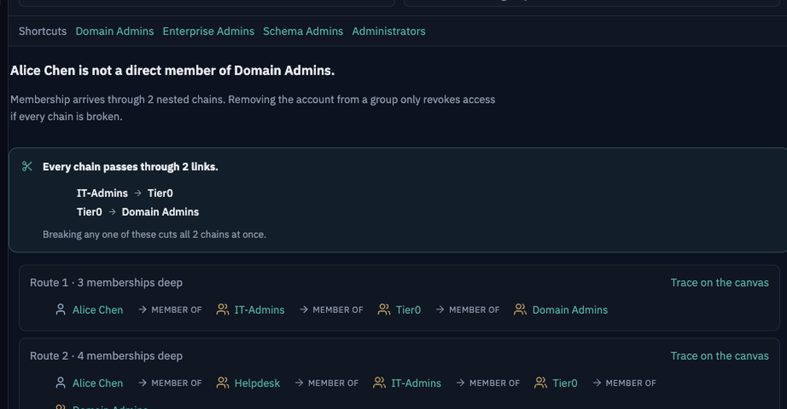

Every route in, and the one link they share
Pathfinder walks every membership chain between an account and a group. When more than one exists it names the links they all pass through — because removing someone from one group revokes nothing if a second chain still arrives. That is how offboarding quietly fails.
Pathfinder · contoso.lab
